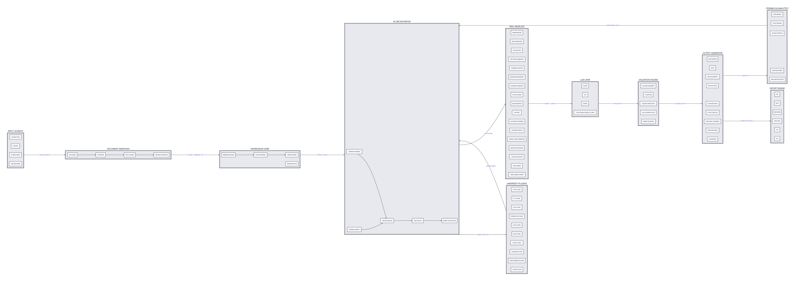

Real sample outputs from the skill library — no cherry-picking. What you see is what your AI produces.
10-mark SPPU-level answer — complete with structure, diagram, and Bloom's alignment.
Cornell-format notes on Stacks & Queues with active recall prompts.
Frequency analysis of 10 question papers + predicted topics.
10 MCQs with Bloom's-calibrated difficulty and distractor explanations.
27 purpose-built SKILL.md files — self-contained, cross-platform, exam-ready. view all →
15-phase answer pipeline. Every question type, every mark level (1–100+), every Bloom's level.
12+ formats — Cornell, Mind Map, Flowchart, Q&A, Rapid Revision, Cheat Sheet. Auto-selected.
13 statistical analyses — frequency, weightage, Bloom's heatmap, trend regression, predictions.
5 probability levels, 7 time plans, GPA-targeted tracks (10/10, 8/10, pass). Per-unit strategies.
11+ university patterns — SPPU, VTU, JNTU, Mumbai, IIT, Oxford, Cambridge. Answer keys included.
6 card types, 3 difficulty tiers, SRS metadata. Exports to Anki, Quizlet, CSV, Markdown.
Marathon, Sprint, Cram, Balanced. Spaced repetition, time allocation, adaptive rescheduling.
9 MCQ patterns, Bloom's-calibrated, distractor strategy. Matches your university's format exactly.
12 assignment types, 6 output formats. Marking scheme, Bloom's level, and CO alignment.
8 viva types. CLAIM-EVIDENCE-LINK framework with grading and model answers.
4 templates — Engineering, Science, Medical, Research. Error analysis + viva questions.
10 categories. Variable definitions, SI units, applicability conditions. Closed-book optimized.
Mermaid, text outline, image descriptions. Color-coded by Bloom's level with priority markers.
10+ frameworks — SWOT, PESTEL, 5 Whys, Fishbone, IRAC, Ethical Matrix, Decision Tree.
Per-criterion scoring. Model answer comparison. Detailed feedback with improvement roadmap.
Dependency graphs, shared concepts, integrated pathways. Program-level curriculum mapping.
Auto-detects any university from PDFs, URLs, or description. Routes to correct skill.
Persistent JSON profile — set once, shared across all 26 skills.
PDF, DOCX, images, scanned docs → clean LLM-friendly text. First step before any skill.
12h/6h/3h/1h emergency plans. Memory palace, chunking, peg system, acronym chains.
Real exam hall constraints — 36-page booklet, time pressure, examiner psychology.
Three ways in — pick the one that fits your workflow. No account needed.
Open ChatGPT, Claude.ai, or Gemini. Copy PROMPT.md, paste it in, then type your question. The system prompt transforms the AI into a subject-expert examiner.
One command installs all 26 skills into your coding agent (Claude Code, Cursor, Copilot). The agent reads the right SKILL.md automatically.
The web app copies skill instructions + your question to clipboard in one click. Open your AI of choice and paste. No setup, no terminal.
# install all 26 exam skills $ npx skills@latest add pinakdhabu/Exam-prompt # or with GitHub CLI $ gh skill install pinakdhabu/Exam-prompt # verify $ ls skills/ | wc -l 24
Transparent about what these skills can and can't do. No hype.
48 sample question papers + 48 solutions covering FE, SE, TE, BE Computer Engineering. Auto-generated PDFs via the convert-to-pdf.js pipeline — proof the skill system works in production.
First-year Engineering question paper. Full SPPU 2019 pattern.
New 2024 pattern with updated syllabus coverage.
Complete paper + 81K solution PDF with model answers.
70-mark paper with IPv4 subnetting, TCP/UDP, and cryptography.
Normalization, transactions, NoSQL, and MongoDB CRUD questions.
Search algorithms, NLP, logic, and AI application questions.
Regression, classification, clustering, and neural networks. Full solutions included.
CNN, RNN, LSTMs, activation functions, and backpropagation.
Browse the complete list of FE (19/24), SE, TE, and BE subjects with sample papers and solutions in the examples/ directory.
No setup, no PROMPT.md paste. Open any Gem in Gemini and start asking questions immediately.
Full-marks theory answers for any question type and mark level.
open gem →Syllabus-locked revision notes in 12+ formats.
open gem →Statistical analysis of past papers with topic predictions.
open gem →Prioritized topics with probability levels and time plans.
open gem →System diagrams from D2 source — auto-rendered via d2 CLI with elk layout.
